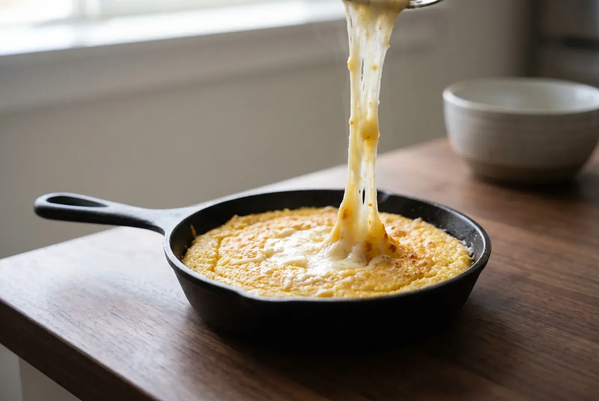
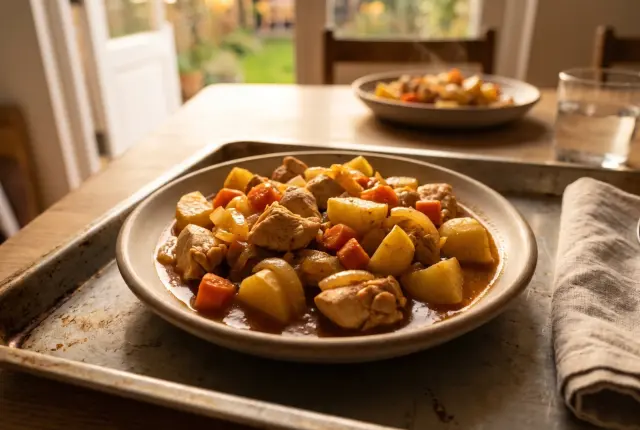
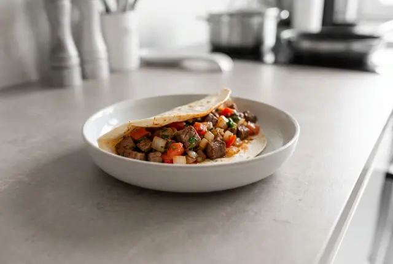

Bölüm 1
10:42
Bölüm 1
10:42

Görüntü temsilîdir · prototip
00:00/08:54
Giriş
Bölümler
Trabzon Mıhlaması: Peynirin İpek Gibi Uzaması
Hangi peynir uzar, tereyağı ne zaman eklenir: kuymağın Trabzon'daki kardeşi mıhlama, bakır sahanda.
Prototip örneği Berkan Güneş, Dada Gastro'da Dada'nın Şefi; sitede 201 yazılı tarifi var. Tariflerinin çoğu Türk Mutfağı tarifleri. Video Mutfağı'nda Kazan Kaynayan Topraklar serisini sunuyor.
Şefin diğer videoları
Şefin kanalı
Bölüm 1
10:42
 Bölüm 2
11:48
Bölüm 2
11:48
 Bölüm 4
09:31
Bölüm 4
09:31
Kazan Kaynayan Topraklar
Seri sayfası
Serinin bölümleri
09:31
Sıradaki bölüm · Bölüm 4Hamsi Tava: Mısır Ununda Çıtırlığın SırrıKasım hamsinin en lezzetli ayı. Temizlemek, mısır ununa bulamak ve tavada yelpaze dizmek.


Video Mutfağı
Benzer videolar
Başka serilerden, bu bölüme yakın süre ve zorlukta videolar.
 Şefin El KitabıBölüm 1
06:52
Akıllı Ekipman & TestBölüm 3
05:44
Şefin El KitabıBölüm 1
06:52
Akıllı Ekipman & TestBölüm 3
05:44

Akıllı Ekipman & TestBölüm 5 05:18
Restoran SırlarıBölüm 5 Pro 08:32 Pişirme ModuMıhlama | Trabzon Usulü Mısır Unlu Peynirli Muhlama
Ekranı açık tutma isteniyor…
Adım 1 / 4 ~4 dk
Mısır Ununu Kavurma
Tereyağını eritip mısır ununu ekleyin, kısık ateşte 3-4 dakika kavurun.
- 120 g Tereyağı
- 3 yemek kaşığı Mısır Unu
Videoda 00:37 · Mısır Ununu Kavurma
Adım 2 / 4 ~5 dk
Suyu Ekleme
Suyu yavaşça ekleyip kısık ateşte karıştırarak 5 dakika pişirin.
- ½ su bardağı Su
Videoda 02:21 · Suyu Ekleme
Adım 3 / 4 ~6 dk
Peyniri Eritme
Peyniri ekleyip kısık ateşte tamamen eriyip uzayan bir kıvam alana kadar 5-6 dakika karıştırarak pişirin.
- 250 g Taze Kaşar Peyniri
Videoda 04:32 · Peyniri Eritme
Adım 4 / 4
Servis
Tavada sıcak, ekmek eşliğinde hemen servis edin.
Videoda 07:09 · Servis
1 / 4
Sıradaki bölüm · 5 sn
Hamsi Tava: Mısır Ununda Çıtırlığın Sırrı